iTest User's Guide
iTest Reports is A&D Technology's legacy reporting tool serving as an alternative to the Uniplot tool that is most commonly used to generate reports.
The iTest Reports feature is located under the Presentation folder of the iTest tree. iTest reports are built using an editor that is similar to the one used in display building, and are built by following two steps:
The reasoning behind this two-step process is to effectively separate the report from the actual content and allow the re-use of parameter sets between reports. A user would first define the parameter set that will be used in the report, and then configure the report by associating those parameters to specific channels that are tied to display objects (e.g., ADTIndicator, etc.).
Reports Feature
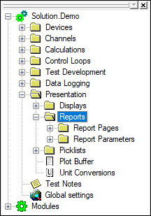
Report parameters are added via a common spreadsheet editor and contain several common attributes.
Report Parameter Attributes
| Parameter Attribute | Description |
| Parameter Name | This is the equivalent of the channel name and is used exclusively within a report. It does not have to match any name in the RDB. However, if it does, the remaining columns are populated with the default information from that channel name including Type, Display Name (Alias), and Units. Note that the parameter name and channel name must be different when creating an array type parameter. Standard practice is to append an “_A” to the channel name to form the parameter name. |
| Type | Numeric, Array or String. |
| Display Name | The string used to display this parameter. Display names follow the iTest channel naming convention (only alphanumeric characters, underscores, and periods are supported). However, the display name can use the international character set. |
| Units | Enter the correct unit that corresponds with the report parameter. |
| Source | Where the parameter is located. The available sources are: RDB: The value comes from a field in a live RDB database. File: The value or array comes from a supported file type – either .dat or .ini format. Formula: The value is computed based on a standard iTest formula string using other parameters and perhaps arrays as inputs. Prompt: The values can optionally be prompted for when the report initially runs. Comment: Returns the string from the Comment field of the parameter. ImportData: The value or array comes from a file that was exported from another Report. |
| Option1 | The name of this field depends on what was chosen for the parameter source. For example: RDB: Field Name. File: Filename. Select INPUTFILE (1-5) to specify a filename passed in via the command line or prompt or click the Browse button to select a specific file. Formula: The formula string; this is any valid iTest formula. ImportData: Filename, select IMPORTDATA (1-5) to specify a filename passed in via the command line or click the Browse button to select a specific file. |
| Secondary Option | The name of this field also depends on what was chosen for the parameter source. For example: RDB: Channel Name. File: Channel Name for .dat or .ini file. |
| Row Specifier | Row specification is required only for .dat or .sc2 file-based parameters. For numerics or strings, it is a way to specify exactly which row of data will be used from the .sc2, .ini or .dat file to get the value for the parameter. For array type parameters, a range of rows may be used. The row specification can be one of the following: ALL: Will populate an array parameter from all the rows in the file. This is only valid with arrays. #: An explicit row number, such as 1 or 20. LAST: A string reference to the last row in the file. LAST-n: A string reference to a row relative to the last row in the file, where 'n' denotes the offset to be used (e.g., LAST-2 references the row two higher than the last row). # to #: Will populate an array parameter from a range of rows in the file. This is only valid with arrays. LAST-(n+1) to LAST-n: Will populate an array parameter from a range of rows relative to the last row in the file. This is only valid with arrays. The row specifier for an array range is <startrow> to <endrow>. For example, Last-10 to Last. |
You can also access a list of reporting functions in the Helper Bar. These can then be dragged directly from the list to the Main Display Area to create new formulas.
Report Functions
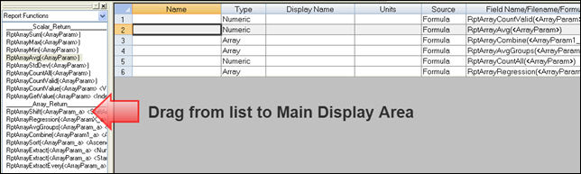
In addition to editing the parameters in the actual spreadsheet, you can also open the Report Parameter Editor for that parameter by either double-clicking the row or using the Edit right-click option. This secondary editor is more structured and appears as follows:
Report Parameter Editor
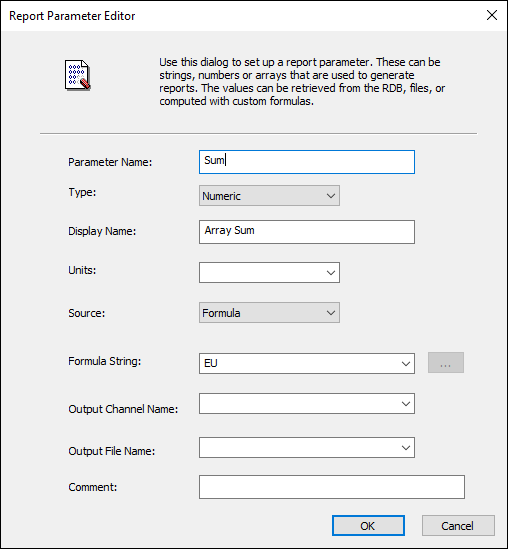
In addition to the parameters you create, all reports will include the following built-in parameters:
The Report Parameters Editor includes the Import Parameters feature which can be accessed by right-clicking anywhere within the editor and selecting Import Parameters.... This option allows you to automatically create a report parameter set from the contents of an iTest .ini or .dat file. Using the Import Parameters feature can save a lot of typing time when creating reports.
Import Parameters Right-Click Option
 |
NOTE: | This feature is only available in the spreadsheet view and not in the report parameter editor. |
A user can use any valid iTest formula in a report, including the logic for an "if then else" formula. Below is an example of how an "if then else" formula can be used:
#if (DataTag = 102) \n RawSpeed \n #else \n -999 \n #endif
Where the "\n" means newline - reformatted, it would look like this:
#if (DataTag = 102)
RawSpeed
#else
-999
#endif
|
NOTE: | The “\n” is used because the RPP file is written in a CSV format and embedded carriage returns are not allowed. |
|
NOTE: | The following paragraph is referring to array-type parameters since an array can also be created with VCL script. |
In addition to computing numeric values via formulas, the reporting system can be used to create new arrays from formulas. For example, if two array parameters are created from loading in columns of a data file (e.g., Speed and SpeedTarget), a new array parameter could be created that would show the difference between the two. This new formula would look something like the following:
Speed – SpeedTarget
When creating array parameters using formulas, the new array size will be set to the size of the smallest array.
A number of built-in functions have been added for dealing with arrays that are constructed in the reporting system. The functions below are all used to return a numeric value by analyzing the contents of an array. That numeric value can either be used in other formulas or displayed on a report.
|
NOTE: | If an array function has more than one argument, then the arguments should be separated by a space and not a comma (the .rpp file is a comma-separated file). |
The number, -999, is used to signify “exclude from evaluation." This is useful when only a portion of an array should be analyzed. For example, assume DataTag has a value of 102 when the desired lines of data are being logged and some other value for the remaining lines.
This formula can be used to create an array where desired speed values appear but all others are set to -999.
#if (DataTag = 102) \n RawSpeed \n #else \n -999 \n #endif. |
NOTE: | If these functions are used, they must be used by themselves and cannot be used in conjunction with other VCL-style formulas. To use the results in a formula, first create a numeric parameter set to one of the report array functions and then use the resulting numeric parameter in a formula. |
Command Line Arguments
| Argument/Switch | Description |
| /rf <ReportFile> | Report file to load. |
| /o <OutputFile> | If the extension of <OutputFile> is .pdf, then the report will be saved as a PDF file. Otherwise, the report will be saved as a snapshot. If this argument is used in conjunction with /h, the system will exit when the output file is generated. |
| /NoPrompt | Do not prompt for the prompt value. Instead use the default. |
| /NoErrMsg | Do not display any error messages. |
| /p | Automatically print the report once it has been loaded. If this argument is used in conjunction with /h, the system will exit after printing. |
| /h | Do not display the report window. |
| /OL | Set print orientation as “landscape”. |
| /OP | Set print orientation as “portrait”. |
| /ut | Sets the global units type (SI, ME, EN, or OG). |
| /ExportParam <RPP File> | The .rpp file that will be used by /ExportData to a data file. The default path is $SUPPORTDIR\Reports\. |
| /ExportData <Data File> | iTestReport will evaluate the given /ExportParam .rpp file and output the result to <Data File>. The default path is $DATADIR\ReportData\. If no /ExportParam is found, iTestReport will output the .rpp file(s) in the currently loaded .rpt file to the output data file. If the <Data File> has .ini as an extension, then it will output the non-array parameters in INI format. |
| /ImportData1 <Data File> to /ImportData10 <Data File> | Load the parameters in the <DataFile> which is generated by <ExportData> into the current local RDB. |
| /Timeout <Timeout in Seconds> | Sets the timeout in seconds for polling /ImportData <DataFile>. The default in iTest Console is two (2) seconds. |
| /mv <MacroName>=<Value> | Sets the value for <MacroName> in the input file name. Applicable to macro-based filenames. This is used primarily by LabCentral before calling a report with multiple files. Consider the following example:/mv RUN_NUM=5If there is no /mv, iTestReport will prompt for the macro value. You can use as many /mv arguments as needed. However, there should be no spaces in the <MacroName>=<Value> string. Also supports switch /path <PATH> for data files, which can have macros like $SUPPORTDIR, for example. |
| /path <Path> | Applied to data files that do not have paths in them. Can include macros (e.g., $SUPPORTDIR, $SYSTEMDIR, etc.). It is important to note that the /importdata switch will use the /path switch if a filepath is not defined in the argument sent with the /importdata switch. |
Once the report parameters have been configured, the overall look of the report needs to be formatted. This is done by using the Report editor, which behaves much like the iTest Display editor.
Sample Report Page
Report pages can be used to format the data from one or more report parameter files. The properties for a report page include the following tabbed sections.
This section allows you to choose the page size of the report.
Orientation Tab
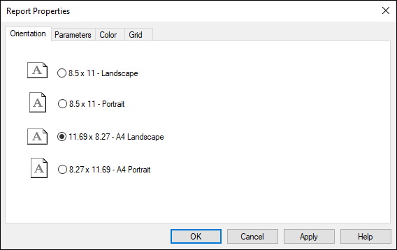
This section is for choosing which parameter set(s) to use in the report.
Parameters Tab
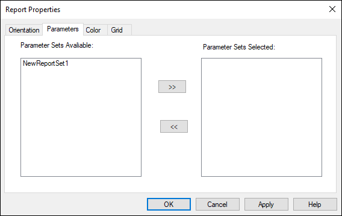
This section allows you to choose a background color and/or image for the report.
Color Tab
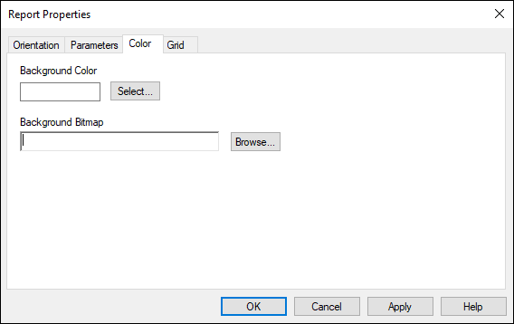
This section allows you to determine whether to show a grid, and how it should appear on the page when you configure your report.
Grid Tab
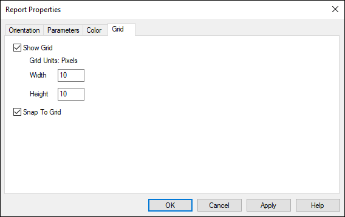
|
NOTE: | Controls will Snap To Grid marks by default. Deselect this option if you do not want controls to automatically snap to the grid. |
The report page editor features several objects that can be used to format the report. Some of these objects are taken directly from the iTest display object list, and others are created specifically for iTest reports. The following objects are the same objects used for the display system:
|
NOTE: | The ADTIndicator does not update in Real-time like it does in a display. It is a static instance. |
The following objects have been added exclusively for iTest reports.
The ADT Report Matrix object (only valid with array type parameters) allows the printing of multiple array parameters in a column or row-based format. The column or row headers can be customized for the matrix object based on the selected orientation.
ADT Report Matrix
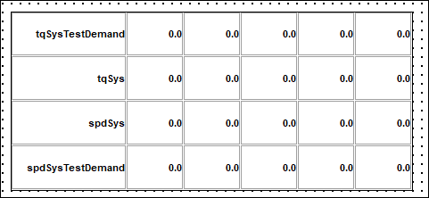
The ADT Report Matrix object has the following property sheet for customizing the object:
ADT Report Matrix Properties
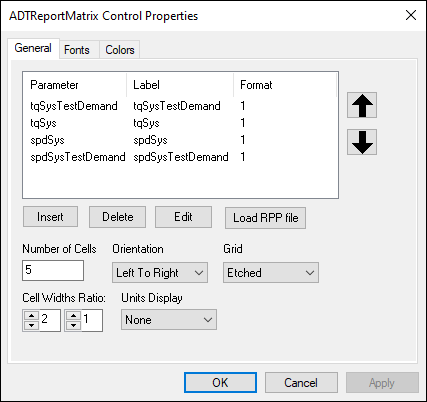
The ADT Report Parameter object is the report equivalent of the ADTDigitalIndicator object used for display building. The difference is that the ADT Report Parameter allows you to specify a label for each value being displayed, and is used to display both the string and numeric parameters.
Sample ADT Report Parameter Object
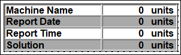
The ADT Report Parameter object can be customized with the following control properties:
ADT Report Parameter Properties
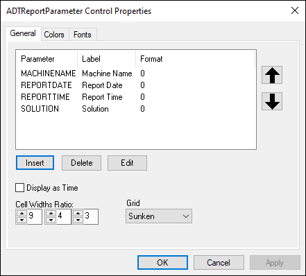
The ADT Report File View object displays the contents of any text file on the report page. This is useful for gathering operator comments of text output generated from other programs like CycleManager.
iTest supports multiple pages per defined report. When you edit a report in Test Manager, it will show up in a tabbed view. By right-clicking on the tab at the bottom, you can add and delete pages.
Add New Report Page
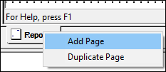
When adding a new page, a prompt appears asking for the page name.
Input Page Title
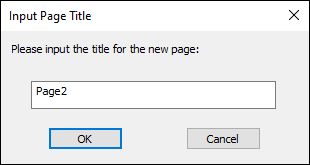
When you print the report, all pages will be sent to a PDF or the destination printer.
Once reports are created, they can be viewed and printed using the iTestReport.exe program. The command line parameters for iTestReport are as follows:
/df <data-file> /rf <report-file> /o <output-file>, if the output file extension is PDF, then output to a PDF file; otherwise, output as a report snapshot /p , print report /h , kills iTestReport.exe once a report is generated /noprompt , do not prompt for values, default prompt values will be used
|
NOTE: | There is a known issue with /o to a PDF output file. When this is the case, the PDF save dialog box is always shown. |
iTestReport /df <data-file> /rf <report-file> [/v] [ /o <output-file> ] /noprompt
Where:
iTestReport is also used in interactive “Viewer” mode. This mode enables the following features:
iTestReport can be run interactively from the command line via a mailslot command or attached to a button on a display. When running interactively, you can save a snapshot of the report. A snapshot consists of all the files necessary to create that report at that point in time. This feature will save the report page file (.rpt), all of the report parameter files (.rpp), and a snapshot of all the data used for that report under the current DATADIR directory in a subfolder called SavedReports. Once a report has been saved, it can be opened again using the menu option File > Open Report Snapshot in iTestReport.
Open Report Snapshot
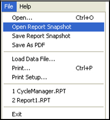
Select Report Snapshot
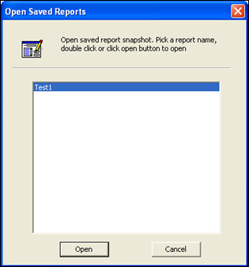
Another way of viewing a report is by using DataAnalysis. This is accomplished by selecting the File > Send to iTestReport option. You will then be prompted to select the report file with which to view the current data set.
Send Data File to iTestReport
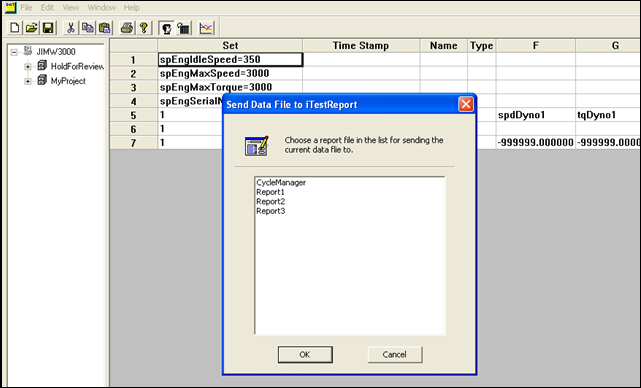
As mentioned previously, the first step to creating a report is to define and configure the parameter sets. Once this has been accomplished, you can then format your report pages by assigning these parameters to display objects that will appear on the final report.
Since iTest does not ship with any predefined parameters, you must first create some of your own. The following procedure will walk you through the steps for creating a parameter set that includes both an array and a numeric.
tEngH2Oinlet. |
NOTE: | Always make sure that the Parameter Name is different than the Channel Name when creating arrays. |
tEngH2OOutlet. When you have finished, the Report Parameter Editor should look like the one below: |
NOTE: | Units will auto-populate in the actual report objects since the value is being pulled from the RDB. Choose EU in the Field Name to pull the most current value. |
Report pages incorporate report page objects that are associated with the parameters that you defined in the previous section. Since iTest does not ship with any pre-defined report pages, you must create them on your own.
The following procedure will walk you through the steps for creating a report page. You will use the available report page objects and associate them with existing parameters.
|
NOTE: | You can export your report to the LabCentral database at this time if desired. |
Once you’ve run the report and are able to view the data in its entirety, you can now save the report as a .pdf file by clicking File > Save As PDF.
|
NOTE: | In order to use this feature, you must have the CutePDFWriter executable installed on your machine. iTest also supports Adobe PDF Writer, which becomes the default if installed. PDF995 is no longer an installation option but can still be used by iTest Reports if previously installed properly. |
Save as PDF
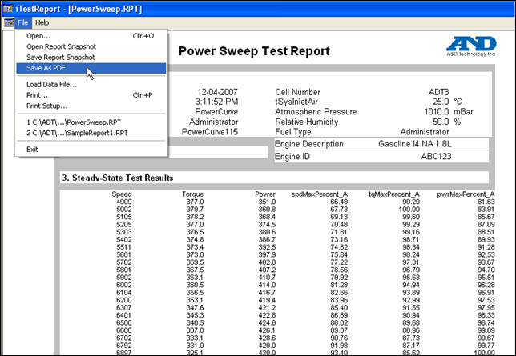
iTest allows you to export report data to a data file, and then import report data back again to be reused accordingly. This is beneficial when you want to export a particular stage of a result and then reuse a different stage in your report.
You would need to determine the specific path and data file name to export the .rpt file to, and then use the import feature to read back the data file.
For example, the following arguments shows how an HDDT test could be split into several individual stages and exported:iTestReport /h /ExportParam <Cold RPP File> /ExportData <Cold Data>
iTestReport /h /ExportParam <Hot RPP File> /ExportData <Hot Data>
iTestReport /timeout 5 /ImportData1 <Cold Data> /ImportData2 <Hot Data> /rf <Report RPT>
iTest supports the following command line arguments for importing/exporting report data.
|
NOTE: | These commands can be used in combination with any existing commands used for a data file. |
Command Line Arguments
| Argument | Description |
| /dfl <InputFile1> | The /df command could also be used here, and the <InputFile> are for the INPUTFILE1 to INPUTFILE5 defined in the RPP file. |
| /rf <ReportFile> | Loads a specific report file. |
| /o <OutputFile> | If the extension of <OutputFile> is PDF, then the report will be saved as a PDF file. Otherwise, the report will be saved as a report snapshot. If used with the argument /h, the report application will exit after the output file is generated. |
| /NoPrompt | Do not prompt for “Prompt” value; just use the default. |
| /p | Automatically print the report after it is loaded. If used with the argument /h, the system will exit after printing. |
| /h | Kills the iTestReport.exe application after the report has been generated. |
| /OL | Set the report orientation to landscape. |
| /OP | Set the report orientation to portrait. |
| /ut | SI, ME, EG, OG. Sets the global units type. |
| /ExportParam <RPP File> | Loads the .rpp file that will be used by /ExportData to a data file. The default path is $SUPPORTDIR\Reports\. |
| /ExportData <Data File> | The iTestReport application will evaluate the given /ExportParam .rpp file and output the result to <Data File>. The default path is $DATADIR\ReportData\. If no /ExportParam is found, it will output the .rpp file(s) in the current RPT file to output to <Data File>. |
| /ImportData1 <Data File> to /ImportData5 <Data File> | Loads the parameters in <Data File>, which is generated by <ExportData> into the current local RDB. |
| /Timeout <Timeout in Seconds> | Sets the time out (in seconds) for polling /ImportData <DataFile>. The default in iTest report is 2 seconds. |
Report parameters defined in the Report Parameter Editor using ImportData as their Source will read data from the files specified in the /ImportData1 and /ImportData2 command line arguments. Since separate files are imported, parameters can have the same in both files.
The following command line arguments can be used within iTest reports for unit conversion:
|
NOTE: | These arguments are not case sensitive. |
Unit Conversion Arguments
| Argument | Description |
| /ut si | // SI unit |
| /ut me | // metric |
| /ut en | // english |
| /ut og | // original |
/df1 (or /df) <InputFile1> /df2 <InputFile2> : : /dfn <InputFilen>
|
NOTE: | These <InputFile> are for the INPUTFILE1 to INPUTFILE10 defined in the RPP file. |
/rf <ReportFile>>
The .rpt file to load.
/o <OutputFile>
If extension of <OutputFile> is PDF, then save the report as a PDF file. Otherwise, save as report snapshot. If used with /h, exit after output file is generated.
/NoPrompt
Do not prompt for “Prompt” value; use the default.
/NoErrMsg
Do not show any error messages.
/p
Automatically print report after it is loaded. If used with /h, exit after print.
/h
Do not show report window.
/OL
Set print out report orientation as landscape.
/OP
Set print out report orientation as portrait.
/ut SI or ME or EN or OG
Set global units type
/ExportParam <RPP File>
The .rpp file that is going to be used by /ExportData to a data file. Default path is $SUPPORTDIR\Reports\.
/ExportData <Data File>
iTestReport will evaluate the given /ExportParam .rpp file and output the result to <Data File>. Default path is $DATADIR\ReportData\. If no /ExportParam found, it will output RPP file(s) in currently load RPT file to output data file. If the <Data File> has INI as extension, then output the non-array parameters in INI format.
/ImportData1 <DataFile> to /ImportData10 <DataFile>
Load the parameters in <DataFile> which is generated by <ExportData> into current local RDB.
/Timeout <Timeout in Seconds>
Set timeout in seconds for polling /ImportData <DataFile>. Default in iTestConsole is 2 seconds.
/mv <MacroName>=<Value>
Set value for <MacroName> in input file name. For example:
/mv RUN_NUM=5 You can as many /mv as needed. There should be no space in <MacroName>=<Value> string.
/path <Path>
<Path> can have macros like $SUPPORTDIR, $SYSTEMDIR, etc., will be applied to data files from /df and /importdata that does not have path in it.
<Number> RptArraySum( <ArrayParam>)<Number> RptArrayMax(<ArrayParam>)<Number> RptArrayMin(<ArrayParam>)<Number> RptArrayAvg(<ArrayParam>)<Number> RptArrayStdDev(<ArrayParam>)<Array> RptArrayShift(<ArrayParam> <ShiftAmount>)<Number> RptArrayCountAll(<ArrayParam>)<Number> RptArrayCountValid(<ArrayParam>)<Number> RptArrayCountValue(<ArrayParam> <ValuetoCount>)<Number> RptArrayGetValue(<ArrayParam> <Index>)<Array> RptArrayRegression(<ArrayParamX> <ArrayParamY>)<Array> RptArrayCurveFit(<ArrayParamX> <ArrayParamY> <order>)<Array> RptArrayAvgGroups(<ArrayParam> <NumberOfPoints in each group>)<Array> RptArrayCombine(<ArrayParam1> <ArrayParam2>)<Array> RptArraySort(<ArrayParam> <Ascending/Descending>)<Array> RptArrayExtract(<ArrayParam> <NumOfPoints to extract>)<Array> RptArrayExtract(<ArrayParam> <StartPoint> <Numberof Points>)<Array> RptArrayExtractEvery(<ArrayParam> <StartPoint> <Every Nth Point>)